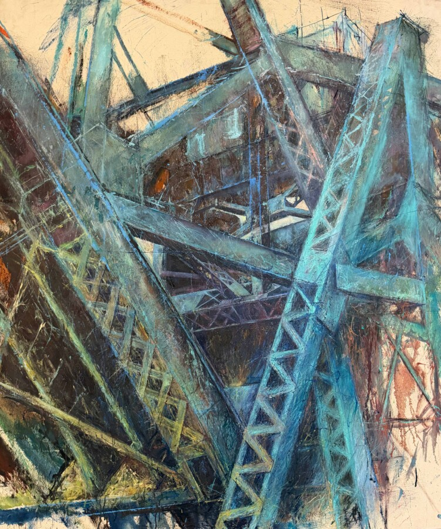

Luna Prysiazhniuk: Exposed
Chicago-based artist Luna Prysiazhniuk presents Exposed, a solo exhibition of oil paintings focused on the structural presence of the urban landscape.
In this body of work, Chicago bridges, elevated tracks, and industrial corridors become both subject and framework. The paintings explore weight, steel, surface, and the tension within built form. Structure is not treated as background — it becomes active, physical, and emotionally charged.
Through layered brushwork and dense material surfaces, architecture shifts from something fixed and solid into something moving and alive. Steel exposed to time, weather, and light becomes a metaphor for endurance and transformation.